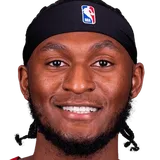

His best final NBA finish was #10 of 30, with the 2023-24 New Orleans Pelicans. In his 573 games for 3 teams over 10 seasons they went 270–303 (47.1%), −33 games under .500, with an average final finish of 19.3.
Jump to: Record by opponent · Season by season · Teammate help
Compare Brandon Ingram with…
Suggested, same era and similar teammate help:


Final NBA finish, season by season
Title Finals Other playoffs Missed playoffs. #1 = champion; the dashed line is last place that season. Each point opens that season's final standings.
All 30 teams ranked in 2023-24, his best finish (#10)Teammate help
 LeBron James3.01 season
LeBron James3.01 season Zion Williamson2.23 seasons
Zion Williamson2.23 seasons Scottie Barnes1.51 season
Scottie Barnes1.51 season
Seasons with help 0.8 to 1.2 (3): best finish #10 of 30, 2023-24, worst #21 of 30, 2020-21.
Career
Career records (W–L, W − L, with and without) include 2026-27 games through Nov. 23, 2026; season counts and finishes are through 2025-26. Each card opens its board in the same scope. How we count.

Latest completed seasons
- 2025-26·
 Toronto·#12 of 3046–36 · Lost in the first round 3–4 to
Toronto·#12 of 3046–36 · Lost in the first round 3–4 to  Cleveland
Cleveland - 2024-25·
 New Orleans·#27 of 3021–61 · Missed playoffs
New Orleans·#27 of 3021–61 · Missed playoffs - 2023-24·New Orleans·#10 of 3049–33 · Lost in the first round 0–4 to
 Oklahoma City
Oklahoma City
2026-27 so far
Games through Nov. 23, 2026, the last game in the nightly data. These games are already in his career records above (W–L, win %, W − L, with and without, all marked "incl. 2026-27"). Season counts, final finishes and teammate help use completed seasons through 2025-26; 2026-27 joins them when the season ends.
| Team | His games | With him | Without him | Gap | On/off per 100 | Started / bench | Close games |
|---|---|---|---|---|---|---|---|
| 1 | 0–1 0.0% | 4–11 26.7% | −26.7 | −5.1 | 0–1 / N/A | 0–1 |
Season by season
Newest first; every header sorts. Final NBA finish is the team's rank among all teams that season (#1 = champion) and opens that season's standings. "Without him" uses the team-season window; the span line counts only the games between his first and last game for the team. The 2026-27 (to date) row counts games through Nov. 23, 2026; its final finish and playoffs are in progress.
| 2026-27 (to date) | In progress | 4–12 25.0% | In progress | 1 of 16 | 0–1 0.0% | 4–11 26.7%span: N/A, gap N/A | −26.7 | |
| 2025-26 | #12 of 30 | 46–36 56.1% | Lost 1st round 3–4 | 77 of 82 | 43–34 55.8% | 3–2 60.0%span: 3–2, gap −4.2 | −4.2 | |
| 2024-25 | #27 of 30 | 21–61 25.6% | Missed playoffs | 18 of 82 | 5–13 27.8% | 16–48 25.0%span: 0–6, gap +27.8 | +2.8 | |
| 2023-24 | #10 of 30 | 49–33 59.8% | Lost 1st round 0–4 | 64 of 82 | 38–26 59.4% | 11–7 61.1%span: 11–7, gap −1.7 | −1.7 | |
| 2022-23 | #17 of 30 | 42–40 51.2% | Lost in play-in | 45 of 82 | 23–22 51.1% | 19–18 51.4%span: 19–18, gap −0.2 | −0.2 | |
| 2021-22 | #16 of 30 | 36–46 43.9% | Lost 1st round 2–4 | 55 of 82 | 29–26 52.7% | 7–20 25.9%span: 6–18, gap +27.7 | +26.8 | |
| 2020-21 | #21 of 30 | 31–41 43.1% | Missed playoffs | 61 of 72 | 29–32 47.5% | 2–9 18.2%span: 1–4, gap +27.5 | +29.4 | |
| 2019-20 | #21 of 30 | 30–42 41.7% | Missed playoffs | 62 of 72 | 25–37 40.3% | 5–5 50.0%span: 5–3, gap −22.2 | −9.7 | |
| 2018-19 | #20 of 30 | 37–45 45.1% | Missed playoffs | 52 of 82 | 25–27 48.1% | 12–18 40.0%span: 5–6, gap +2.6 | +8.1 | |
| 2017-18 | #21 of 30 | 35–47 42.7% | Missed playoffs | 59 of 82 | 27–32 45.8% | 8–15 34.8%span: 6–10, gap +8.3 | +11.0 | |
| 2016-17 | #28 of 30 | 26–56 31.7% | Missed playoffs | 79 of 82 | 26–53 32.9% | 0–3 0.0%span: 0–3, gap +32.9 | +32.9 |
On/off, starts and close games
From the lineup data, 1996-97 on, incl. 2026-27 through Nov. 23, 2026. On/off is net points per 100 possessions with him on the floor minus off, a different unit from the win-rate gaps. Started and off the bench are team records in those games; close games are those within 5 points in the last 5 minutes with him on the floor.
| 2026-27 (to date) | −5.1 | 0–1 0.0% | N/A | 0–1 0.0% | |
| 2025-26 | −4.2 | 43–34 55.8% | N/A | 19–13 59.4% | |
| 2024-25 | −2.4 | 5–13 27.8% | N/A | 4–4 50.0% | |
| 2023-24 | −4.2 | 38–26 59.4% | N/A | 10–12 45.5% | |
| 2022-23 | +1.5 | 23–22 51.1% | N/A | 10–11 47.6% | |
| 2021-22 | +5.4 | 29–26 52.7% | N/A | 10–11 47.6% | |
| 2020-21 | −1.7 | 29–32 47.5% | N/A | 14–18 43.8% | |
| 2019-20 | +0.7 | 25–37 40.3% | N/A | 7–24 22.6% | |
| 2018-19 | +1.7 | 25–27 48.1% | N/A | 14–13 51.9% | |
| 2017-18 | −5.5 | 27–32 45.8% | N/A | 13–15 46.4% | |
| 2016-17 | −2.2 | 11–29 27.5% | 15–24 38.5% | 8–20 28.6% |
Teammate help by season
Help this season = Teammates Score points for honors won that season by teammates who shared a game with him, with every teammate that adds to it. Only honors won in that same season count. How help works.
- 2026-27
 LA ClippersHelp this season: pending (honors are awarded after the season)
LA ClippersHelp this season: pending (honors are awarded after the season) - 2025-26Toronto
Scottie Barnes All-StarAll-Def 2nd1.576 g
 Collin Murray-Boyles All-Rookie 2nd0.12553 g
Collin Murray-Boyles All-Rookie 2nd0.12553 g
Help this season: 1.625+ = 1.5 Scottie Barnes + 0.125 Collin Murray-Boyles
Other teammates (no honors that season): Jamal Shead 77 g, Sandro Mamukelashvili 75 g, Gradey Dick 72 g, Immanuel Quickley 68 g, Ja'Kobe Walter 67 g, Jamison Battle 58 g, RJ Barrett 53 g, Jakob Poeltl 44 g, Ochai Agbaji 41 g, Jonathan Mogbo 37 g, Garrett Temple 21 g, AJ Lawson 20 g, Alijah Martin 19 g, Trayce Jackson-Davis 15 g and 3 more
- 2024-25New Orleans
 Yves Missi All-Rookie 2nd0.12517 g
Yves Missi All-Rookie 2nd0.12517 g
Help this season: 0.125 = 0.125 Yves Missi
Other teammates (no honors that season): Jeremiah Robinson-Earl 18 g, Javonte Green 18 g, BJ Boston 15 g, Daniel Theis 12 g, Jamal Cain 11 g, Jose Alvarado 11 g, Trey Jemison 10 g, Antonio Reeves 9 g, Jordan Hawkins 9 g, Jaylen Nowell 8 g, Trey Murphy 7 g, CJ McCollum 6 g, Herb Jones 6 g, Zion Williamson 6 g and 3 more
- 2023-24New Orleans
 Herb Jones All-Def 1st158 g
Herb Jones All-Def 1st158 g
Help this season: 1 = 1 Herb Jones
Other teammates (no honors that season): Jonas Valanciunas 64 g, Zion Williamson 55 g, Naji Marshall 54 g, Jordan Hawkins 52 g, CJ McCollum 49 g, Dyson Daniels 49 g, Jose Alvarado 46 g, Larry Nance Jr 45 g, Trey Murphy 43 g, Cody Zeller 37 g, Jeremiah Robinson-Earl 28 g, Matt Ryan 18 g, Kira Lewis 11 g, EJ Liddell 8 g and 3 more
- 2022-23New Orleans
Zion Williamson All-Star112 g
Help this season: 1 = 1 Zion Williamson
Other teammates (no honors that season): Herb Jones 45 g, Naji Marshall 45 g, Jonas Valanciunas 43 g, Trey Murphy 43 g, CJ McCollum 42 g, Larry Nance Jr 38 g, Dyson Daniels 27 g, Jose Alvarado 27 g, Josh Richardson 21 g, Jaxson Hayes 19 g, Devonte Graham 18 g, Willy Hernangomez 18 g, Kira Lewis 15 g, Garrett Temple 10 g and 1 more
- 2021-22New Orleans
Herb Jones All-Rookie 2nd0.12555 g
Help this season: 0.125 = 0.125 Herb Jones
Other teammates (no honors that season): Jonas Valanciunas 52 g, Devonte Graham 52 g, Jaxson Hayes 44 g, Garrett Temple 43 g, Trey Murphy 41 g, Nickeil Alexander-Walker 37 g, Jose Alvarado 33 g, Naji Marshall 33 g, Josh Hart 29 g, Willy Hernangomez 28 g, Gary Clark 25 g, Tomas Satoransky 23 g, Kira Lewis 17 g, CJ McCollum 15 g and 4 more
- 2020-21New Orleans
Zion Williamson All-Star159 g
Help this season: 1 = 1 Zion Williamson
Other teammates (no honors that season): Eric Bledsoe 60 g, Steven Adams 54 g, Jaxson Hayes 49 g, Lonzo Ball 49 g, Kira Lewis 46 g, Josh Hart 46 g, Nickeil Alexander-Walker 38 g, Willy Hernangomez 37 g, JJ Redick 31 g, Naji Marshall 22 g, Nicolo Melli 22 g, Sindarius Thornwell 14 g, Wenyen Gabriel 12 g, James Johnson 11 g and 4 more
- 2019-20New Orleans
Zion Williamson All-Rookie 1st0.2522 g
Help this season: 0.25 = 0.25 Zion Williamson
Other teammates (no honors that season): Josh Hart 58 g, Lonzo Ball 58 g, Jrue Holiday 54 g, JJ Redick 54 g, Jaxson Hayes 54 g, Nicolo Melli 51 g, Frank Jackson 50 g, E'Twaun Moore 47 g, Derrick Favors 45 g, Nickeil Alexander-Walker 39 g, Kenrich Williams 33 g, Jahlil Okafor 25 g
- 2018-19
 LA Lakers
LeBron James All-NBA 3rdAll-Star334 g
LA Lakers
LeBron James All-NBA 3rdAll-Star334 g
Help this season: 3 = 3 LeBron James
Other teammates (no honors that season): Kentavious Caldwell-Pope 52 g, Lance Stephenson 49 g, Josh Hart 49 g, Kyle Kuzma 48 g, JaVale McGee 47 g, Tyson Chandler 39 g, Lonzo Ball 36 g, Rajon Rondo 28 g, Sviatoslav Mykhailiuk 28 g, Ivica Zubac 27 g, Michael Beasley 23 g, Moritz Wagner 20 g, Reggie Bullock 8 g, Alex Caruso 6 g and 3 more
- 2017-18LA Lakers
 Kyle Kuzma All-Rookie 1st0.2558 g
Kyle Kuzma All-Rookie 1st0.2558 g Lonzo Ball All-Rookie 2nd0.12539 g
Lonzo Ball All-Rookie 2nd0.12539 g
Help this season: 0.375 = 0.25 Kyle Kuzma + 0.125 Lonzo Ball
Other teammates (no honors that season): Julius Randle 59 g, Brook Lopez 53 g, Kentavious Caldwell-Pope 52 g, Josh Hart 52 g, Corey Brewer 50 g, Jordan Clarkson 49 g, Larry Nance Jr 38 g, Tyler Ennis 35 g, Ivica Zubac 24 g, Alex Caruso 22 g, Andrew Bogut 21 g, Thomas Bryant 8 g, Isaiah Thomas 7 g, Vander Blue 5 g and 5 more
- 2016-17LA LakersHelp this season: 0, no honored teammate
Record against each opponent
- Best regular-season record against one franchise: 15–8 (65.2%) against the Memphis Grizzlies in 23 games.
- Toughest regular-season record against one franchise: 8–16 (33.3%) against the Utah Jazz in 24 games.
Regular season, incl. 2026-27 through Nov. 23, 2026: 573 games, 270–303, against 30 franchises.
Grouped by franchise (named as today); game lists keep each team's name that season. Filters and the tab are kept in the URL, so a filtered view can be shared.
| Games list | |||||||
|---|---|---|---|---|---|---|---|
| 28 | 11–17 | 39.3% | −6 | N/A | 2016-17 to 2025-26 | ||
| 27 | 12–15 | 44.4% | −3 | N/A | 2016-17 to 2025-26 | ||
| 27 | 10–17 | 37.0% | −7 | N/A | 2016-17 to 2025-26 | ||
| 26 | 10–16 | 38.5% | −6 | N/A | 2016-17 to 2025-26 | ||
| 26 | 10–16 | 38.5% | −6 | N/A | 2016-17 to 2026-27 | ||
| 25 | 14–11 | 56.0% | +3 | N/A | 2016-17 to 2025-26 | ||
| 25 | 16–9 | 64.0% | +7 | N/A | 2016-17 to 2025-26 | ||
| 24 | 8–16 | 33.3% | −8 | N/A | 2016-17 to 2025-26 | ||
| 23 | 9–14 | 39.1% | −5 | N/A | 2016-17 to 2025-26 | ||
| 23 | 15–8 | 65.2% | +7 | N/A | 2016-17 to 2025-26 | ||
| 23 | 9–14 | 39.1% | −5 | 0–1 (0–4 in games) | 2016-17 to 2025-26 | ||
| 22 | 12–10 | 54.5% | +2 | 0–1 (2–4 in games) | 2016-17 to 2025-26 | ||
| 20 | 9–11 | 45.0% | −2 | N/A | 2016-17 to 2025-26 | ||
| 19 | 6–13 | 31.6% | −7 | N/A | 2019-20 to 2025-26 | ||
| 18 | 12–6 | 66.7% | +6 | N/A | 2016-17 to 2025-26 | ||
| 18 | 7–11 | 38.9% | −4 | N/A | 2016-17 to 2025-26 | ||
| 16 | 11–5 | 68.8% | +6 | N/A | 2016-17 to 2025-26 | ||
| 16 | 9–7 | 56.2% | +2 | N/A | 2016-17 to 2025-26 | ||
| 16 | 9–7 | 56.2% | +2 | 0–1 (2–3 in games) | 2016-17 to 2025-26 | ||
| 16 | 10–6 | 62.5% | +4 | N/A | 2016-17 to 2025-26 | ||
| 15 | 5–10 | 33.3% | −5 | N/A | 2016-17 to 2025-26 | ||
| 15 | 6–9 | 40.0% | −3 | N/A | 2016-17 to 2025-26 | ||
| 14 | 8–6 | 57.1% | +2 | N/A | 2016-17 to 2025-26 | ||
| 14 | 6–8 | 42.9% | −2 | N/A | 2016-17 to 2025-26 | ||
| 14 | 5–9 | 35.7% | −4 | N/A | 2016-17 to 2023-24 | ||
| 14 | 8–6 | 57.1% | +2 | N/A | 2016-17 to 2025-26 | ||
| 13 | 8–5 | 61.5% | +3 | N/A | 2016-17 to 2025-26 | ||
| 13 | 4–9 | 30.8% | −5 | N/A | 2016-17 to 2025-26 | ||
| 12 | 6–6 | 50.0% | 0 | N/A | 2016-17 to 2025-26 | ||
| 11 | 5–6 | 45.5% | −1 | N/A | 2016-17 to 2025-26 |
Rows add up to his career record in his games. A playoff series counts when he played in it; early round-robin games show as games only. How we count.
Playoffs, with and without him
| 2025-26 | Lost in the first round 3–4 to | #12 of 30 | 5 of 7 | 2–3 40.0% | 1–1 50.0% | −10.0 | |
| 2023-24 | Lost in the first round 0–4 to | #10 of 30 | 4 of 4 | 0–4 0.0% | N/A | N/A | |
| 2021-22 | Lost in the first round 2–4 to | #16 of 30 | 6 of 6 | 2–4 33.3% | N/A | N/A |
Arrival and departure
Team wins per 82 games the season before he arrived vs his first season there, and his last season vs the season after he left. He leaves a team only when his next season with games is for another team (or he never plays again); whole seasons he missed and came back from are one "Missed" row with the team's record without him. Per 82 so short seasons compare fairly. These are team records, not a measure of what he did.
| Arrived | 2025-26 | 2024-25: 30–52 30.0 per 82 | 2025-26: 46–36 46.0 per 82 | +16.0 wins | |
| Left | after 2024-25 | 2024-25: 21–61 21.0 per 82 | 2025-26: 26–56 26.0 per 82 without him | +5.0 wins | |
| Arrived | 2019-20 | 2018-19: 33–49 33.0 per 82 | 2019-20: 30–42 34.2 per 82 | +1.2 wins | |
| Left | after 2018-19 | 2018-19: 37–45 37.0 per 82 | 2019-20: 52–19 60.1 per 82 without him | +23.1 wins | |
| Debut | 2016-17 | 2015-16: 17–65 17.0 per 82 | 2016-17: 26–56 26.0 per 82 | +9.0 wins |
Best duos
Team record in regular-season games both played, top 10 by win %, at least 50 games together, incl. 2026-27 through Nov. 23, 2026.
 RJ Barrett
32–21 60.4%
RJ Barrett
32–21 60.4%
Immanuel Quickley 40–28 58.8% CJ McCollum
65–47 58.0%
CJ McCollum
65–47 58.0% Dyson Daniels
44–32 57.9%
Dyson Daniels
44–32 57.9% Naji Marshall
88–66 57.1%
Naji Marshall
88–66 57.1% Jamison Battle
33–25 56.9%
Jamison Battle
33–25 56.9% Ja'Kobe Walter
38–29 56.7%
Ja'Kobe Walter
38–29 56.7% Trey Murphy
75–59 56.0%
Trey Murphy
75–59 56.0% Jamal Shead
43–34 55.8%
Jamal Shead
43–34 55.8% Gradey Dick
40–32 55.6%
Gradey Dick
40–32 55.6%
With and without his teammates
His 12 teammates with the most regular-season games together. "Together" is the team's record in the games both played for it; "Without him" is the team's record in the games Brandon Ingram played for that team while the teammate was on it (between the teammate's first and last game for the team, the appearance span) and the teammate did not play. Fewer than 20 games without him: no gap. Games through Nov. 23, 2026. How we count.
 Josh HartLA Lakers 2017-18 to 2018-19; New Orleans 2019-20 to 2021-22
Josh HartLA Lakers 2017-18 to 2018-19; New Orleans 2019-20 to 2021-22- Together
- 108–126 46.2%
- Without him
- 9–14 39.1%
- Gap
- 7.0 points lower
 Larry Nance JrLA Lakers 2016-17 to 2017-18; New Orleans 2021-22 to 2023-24
Larry Nance JrLA Lakers 2016-17 to 2017-18; New Orleans 2021-22 to 2023-24- Together
- 85–100 45.9%
- Without him
- 27–30 47.4%
- Gap
- 1.4 points higher
- Lonzo BallLA Lakers 2017-18 to 2018-19; New Orleans 2019-20 to 2020-21
- Together
- 83–99 45.6%
- Without him
- 18–17 51.4%
- Gap
- 5.8 points higher
 Jaxson HayesNew Orleans 2019-20 to 2022-23
Jaxson HayesNew Orleans 2019-20 to 2022-23- Together
- 76–90 45.8%
- Without him
- 26–23 53.1%
- Gap
- 7.3 points higher
- Herb JonesNew Orleans 2021-22 to 2024-25
- Together
- 90–74 54.9%
- Without him
- 5–13 27.8%
- Gap
- Too few games without him
 Jonas ValanciunasNew Orleans 2021-22 to 2023-24
Jonas ValanciunasNew Orleans 2021-22 to 2023-24- Together
- 87–72 54.7%
- Without him
- 3–2 60.0%
- Gap
- Too few games without him
- Naji MarshallNew Orleans 2020-21 to 2023-24
- Together
- 88–66 57.1%
- Without him
- 25–29 46.3%
- Gap
- 10.8 points lower
- Zion WilliamsonNew Orleans 2019-20 to 2020-21; New Orleans 2022-23 to 2024-25
- Together
- 81–73 52.6%
- Without him
- 10–16 38.5%
- Gap
- 14.1 points lower
- Trey MurphyNew Orleans 2021-22 to 2024-25
- Together
- 75–59 56.0%
- Without him
- 9–13 40.9%
- Gap
- 15.1 points lower
 Julius RandleLA Lakers 2016-17 to 2017-18
Julius RandleLA Lakers 2016-17 to 2017-18- Together
- 51–79 39.2%
- Without him
- 2–6 25.0%
- Gap
- Too few games without him
 Jordan ClarksonLA Lakers 2016-17 to 2017-18
Jordan ClarksonLA Lakers 2016-17 to 2017-18- Together
- 47–81 36.7%
- Without him
- N/A N/A
- Gap
- Too few games without him
 Jose AlvaradoNew Orleans 2021-22 to 2024-25
Jose AlvaradoNew Orleans 2021-22 to 2024-25- Together
- 64–53 54.7%
- Without him
- 15–16 48.4%
- Gap
- 6.3 points lower